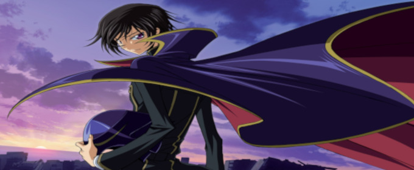
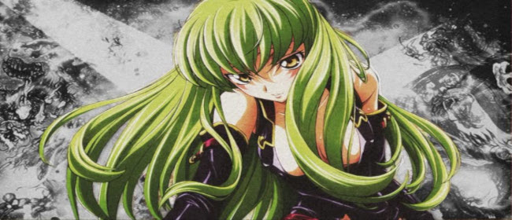
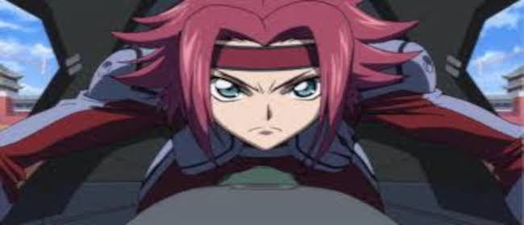
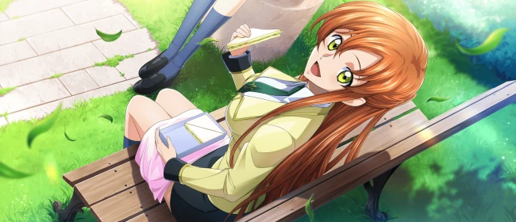
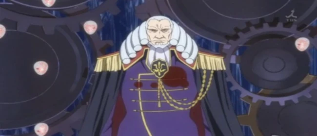

Lelouch Lamperouge é o protagonista do anime Code Geass: Lelouch of the Rebellion. Inteligente, carismático e estrategista nato, ele assume a identidade mascarada de Zero para liderar uma rebelião contra o poderoso Império de Britannia, que oprime o Japão e outros territórios conquistados. Após receber o poder do Geass, que permite controlar a vontade de qualquer pessoa uma única vez, Lelouch decide usar essa habilidade para criar um mundo onde sua irmã, Nunnally, possa viver em paz. Seu idealismo, no entanto, é constantemente desafiado por dilemas morais e pelos sacrifícios exigidos por sua revolução.

Ao longo da série, Lelouch se transforma de um estudante aparentemente comum em um líder revolucionário com ambições grandiosas e métodos muitas vezes questionáveis. Sua jornada é marcada por tragédias, traições e um crescente isolamento emocional, à medida que suas ações afetam tanto aliados quanto inimigos. Apesar de suas decisões controversas, Lelouch permanece uma figura fascinante e complexa, sendo visto por alguns como herói e por outros como vilão. Seu desfecho no anime é considerado um dos mais impactantes da história da animação japonesa, encerrando sua trajetória com um misto de redenção e sacrifício.
C.C.
C.C. é uma das personagens centrais de Code Geass e desempenha um papel fundamental na jornada de Lelouch. Enigmática e imortal, ela é a responsável por conceder o poder do Geass a Lelouch, selando um pacto misterioso com ele. Com seus longos cabelos verdes e expressão serena, C.C. esconde um passado doloroso e cheio de segredos, marcado por séculos de solidão e rejeição. Ao longo da série, ela age como conselheira e aliada fiel de Lelouch, mantendo-se ao seu lado mesmo nos momentos mais sombrios, enquanto busca compreender o próprio significado de sua existência.

Apesar de sua postura fria e distante, C.C. revela gradualmente um lado mais humano e vulnerável. Sua relação com Lelouch vai além de uma simples aliança estratégica, desenvolvendo-se em uma conexão profunda baseada em confiança, compreensão mútua e até afeição. Ela representa o elo entre o sobrenatural e o emocional da série, trazendo à tona reflexões sobre identidade, desejo de morte e o fardo da eternidade. Ao final, C.C. permanece uma figura intrigante e marcante, cuja presença silenciosa é vital para o desenrolar da trama e o destino de Lelouch.
Kallen Stadtfeld
Kallen Stadtfeld é uma das personagens mais marcantes de Code Geass, conhecida por sua bravura, lealdade e dualidade de identidade. Filha de mãe japonesa e pai britânico, Kallen vive um conflito interno constante entre suas origens e sua posição social. No colégio Ashford, ela se apresenta como uma estudante frágil e refinada, mas fora dele, assume sua verdadeira identidade como Kallen Kozuki, uma das mais habilidosas combatentes da resistência japonesa. Como piloto do mecha Guren, ela se destaca nas batalhas contra o Império de Britannia, mostrando coragem, força e uma profunda determinação em libertar seu povo da opressão.

Ao longo da série, Kallen desenvolve uma relação complexa com Lelouch, sem saber inicialmente que ele é o mascarado Zero, seu líder na resistência. Essa relação oscila entre admiração, frustração, afeto e decepção, à medida que ela descobre suas verdadeiras intenções e métodos. Mesmo diante de conflitos morais e perdas dolorosas, Kallen mantém sua integridade e senso de justiça, tornando-se uma das personagens mais humanas e inspiradoras da trama. Sua força emocional e física, aliada a seu coração decidido, fazem dela um símbolo da luta pela liberdade e da esperança em um futuro mais justo.
Shirley Fenette
Shirley Fenette é uma personagem secundária, porém profundamente significativa em Code Geass. Estudante da Ashford Academy, ela é colega de classe e apaixonada por Lelouch, sem saber inicialmente de sua identidade secreta como Zero. Shirley representa o lado mais humano e inocente da vida de Lelouch, um elo com a normalidade que ele gradualmente perde ao se aprofundar na guerra e em seus jogos políticos. Gentil, sensível e dedicada, Shirley tenta constantemente entender Lelouch, mesmo quando ele se mostra distante e envolto em segredos.

Sua trajetória na série é marcada por conflitos emocionais intensos, especialmente após eventos traumáticos que a colocam no centro da tragédia causada pela luta de Lelouch. Em certos momentos, ela descobre verdades devastadoras, mas sua afeição por Lelouch permanece, revelando uma força emocional tocante. Shirley simboliza o impacto das decisões de Lelouch sobre pessoas comuns que o amam, mesmo sem conhecer toda a verdade. Sua história é comovente e trágica, adicionando uma camada de dor e humanidade à narrativa complexa e muitas vezes brutal de Code Geass.
Charles zi Britannia
Charles zi Britannia é o imperador do Sacro Império de Britannia e um dos principais antagonistas de Code Geass. Como soberano de uma nação expansionista e autoritária, Charles representa a força opressora contra a qual Lelouch se rebela. Frio, imponente e profundamente convicto de sua ideologia, ele defende a filosofia da "sobrevivência do mais forte" e acredita que as emoções humanas, especialmente a dor e o amor, enfraquecem a sociedade. Seu domínio é marcado por tirania, segregação social e manipulação brutal dos povos conquistados, tornando-o uma figura temida e respeitada por seus súditos.

Apesar de sua imagem inicial de imperador implacável, Charles é um personagem de grande complexidade. Ao longo da série, descobre-se que ele, junto de sua aliada Marianne, tem planos cósmicos envolvendo o Geass e a reestruturação do mundo através do "Requiem para o Mundo", uma visão distorcida de paz por meio da unificação das consciências humanas. Seu papel vai além da política, adentrando o misticismo e a filosofia, desafiando não apenas Lelouch como também a própria natureza da realidade e da existência. A oposição entre Charles e Lelouch representa o embate entre dois ideais opostos de mundo, culminando em um dos momentos mais marcantes e reveladores da série.